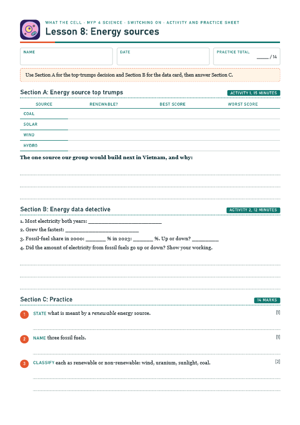

By the end of the lesson you can
- Name the main sources of energy for electricity
- Classify sources as renewable or non-renewable
- Describe how fossil fuels formed
- Compare sources using evidence
Keys: arrows or a presentation clicker move the slides, F for full screen. Slides with a red dot have a video or simulation.
Videos (all 5 minutes or less)
- 4:01
Renewable and non-renewable resources
Next Generation Science. While you watch: What makes a resource non-renewable? Slide 13.
Simulations
- Lab
Print and practise

Activity and practice sheet
Used in the lesson’s activities, with practice questions. Your teacher has the answers.
Download (PDF)Lesson 8 slides
All 21 slides in one file, to read again or print. The video buttons on the slides open YouTube.
Download the slides (PDF)Revising? The Revision tab on the unit page has the unit notes and review.
Class activity pack
Everything to print for the lesson’s activities: picture cards, sorting mats, station cards with their kit lists, and the teacher’s set-up notes. Print it before class.
Download the activity pack (PDF)Notes: Energy sources
energy source
Where the energy to make electricity comes from. For example: coal, sunlight, wind.
non-renewable
Will run out: it cannot be replaced in a human lifetime. For example: coal, oil, gas, uranium.
renewable
Will not run out: it is replaced naturally. For example: sunlight, wind, flowing water.
fossil fuel
Fuel made from plants and animals that died millions of years ago. For example: coal, oil, natural gas.
hydroelectric
Electricity from falling water turning turbines. For example: the Hoa Binh dam.
geothermal
Heat from hot rocks deep underground. For example: power stations in Iceland.
non-renewable
Used much faster than it forms, so it will run out. For example: coal, oil, gas.
renewable
Replaced naturally as fast as we use it, so it will not run out. Most renewables produce no carbon dioxide while making electricity.. For example: the Sun rises every day.
Key words
| energy source | where the energy for electricity comes from |
|---|---|
| renewable | replaced naturally; will not run out |
| non-renewable | will run out |
| fossil fuel | coal, oil or gas from ancient living things |
| hydroelectric | electricity from falling water |
| geothermal | heat from deep rocks |
| biomass | plant or animal material used as fuel |